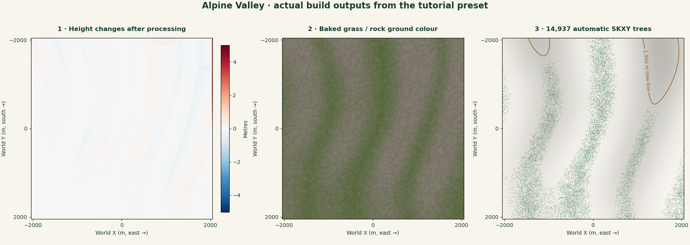
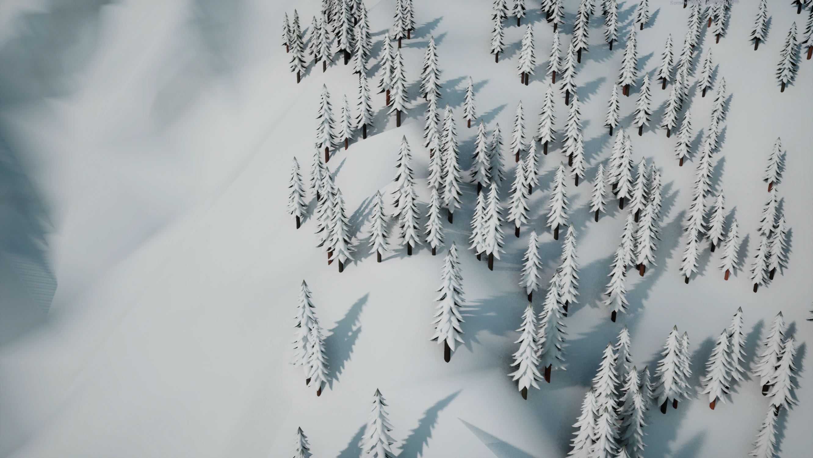
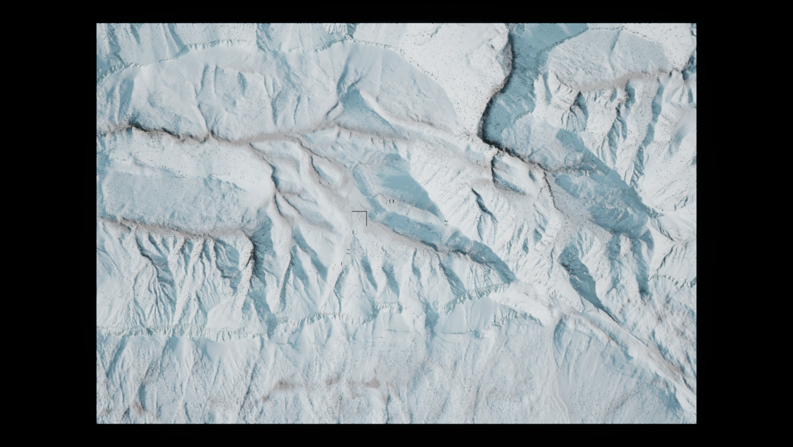

STEP 01
Install the tools once
You need Python 3.10 or later, pipx, and the Windows edition of Ski-E-O! or its demo installed through Steam. Linux with Proton is also supported. You can prepare maps on macOS, but this tutorial’s game launch requires Windows or Linux with Proton.
Launch the game once through Steam, then close it. If you already use Custom Map, update the CLI with the command below and run skieomod update to update the installed loader.
First time using Python or pipx?
Install Python from python.org, then install pipx. On Windows, run these commands in PowerShell:
py -m pip install --user pipx
py -m pipx ensurepathOn Debian or Ubuntu, install the distribution’s pipx package and run pipx ensurepath. For other systems, follow the official pipx installation instructions. Open a new terminal afterwards so the command is on your PATH.
Install the latest published tools and set up the game:
pipx install --force --index-url https://skieomod.emillon.fr/downloads/pypi/ skieo-custom-map
skieomod setup
skieomod --versionsetup installs UE4SS, the Custom Map loader and the Veymont example, and remembers the game directories. If it cannot find the game, use skieomod setup --game-dir "PATH TO GAME". Choose the Steam installation folder that contains SkiResortSimulator.
Prefer a graphical interface? With CLI 1.15 or later, run skieomod editor to create or open a source project, import your own heightmap, sculpt terrain in 3D and configure vegetation. The icon toolbar also opens graph/Lua triggers, resources and object properties. Its Build, Test and Play buttons use the same pipeline described below. See the native editor guide and screenshots and the visual scripts and scenarios tutorial, or follow the Ticket Office model tutorial.
Checkpoint: skieomod --version prints a version number. This walkthrough was checked with CLI 1.16.0, a prepared release awaiting publication. The public download is currently 1.15.0. Automatic raw dimensions and the relative test elevation range require 1.12 or later.
STEP 02
Know what your heightmap contains
Already have a heightmap? Start with your own file. Choose the answer that matches it below. Your choice also selects the configuration in step 4. The practice download is a separate option.
I already have an R16 / RAW
Use your existing headerless, unsigned 16-bit grid directly. You do not need to download a PNG or convert it first. Keep its original filename or copy it as source-heightmap.r16 in step 4.
Little-endian is the default. If your exporter wrote big-endian samples, add "format": "r16be". A .raw extension is also accepted for the same unsigned 16-bit layout.
Without vertices, the build counts the two-byte samples and assumes a square grid if possible. For a rectangular export, supply "vertices": [width, height], or one known side and null for the other. Use sample counts, not metres. File size alone cannot prove that the grid is square.
I already have a 16-bit PNG
Use your own PNG directly. It must be 16-bit grayscale, non-interlaced and without alpha. The build reads both dimensions from its header, including rectangular images; you can omit vertices.
Keep your existing source. There is no need to download the Alpine Valley example. A colour image, JPEG or 8-bit PNG needs a new export from your terrain tool; increasing its bit depth does not recover lost elevation detail.
I want to try the example
OPTIONAL PRACTICE DATA
Alpine Valley practice files
Use this only if you want a known working example. It is a synthetic 513 × 513 grid with 8 m spacing, a 4,096 × 4,096 m extent and actual elevations of 800 to 2,200 m. The raw version is little-endian, north-to-south and exactly 526,338 bytes.

The practice terrain is CC0. The numeric settings below belong to this example.
What you provide, and what the build calculates
- Source: the file you want to build, referenced by
build.heightmap.file. - Spacing: metres between neighbouring samples. Use the exporter’s value. If you know the intended width, spacing is
width_in_metres / (samples_x − 1). Both axes use the same spacing. - Dimensions: automatic for PNG; assumed square from the sample count for raw R16 when possible. Known raw dimensions override that assumption.
- Elevation: optional for a first test. Without elevation settings, the lowest and highest actual samples become 0 and 1,000 m. This is a relative test range; pixels alone do not reveal real altitudes. For accurate terrain, supply the actual altitude range or the exporter’s scale and offset.
The build calculates the map extent, sample encoding, centred origin and menu preview, then updates the generated terrain fields. You do not need to calculate those fields yourself.
map_width = (samples_x − 1) × spacing
map_length = (samples_y − 1) × spacing
raw_file_bytes = samples_x × samples_y × 2
elevation_metres = sample × height_scale + height_offsetI have a GeoTIFF, DEM or another format
Export a 16-bit grayscale PNG or headerless unsigned R16 from a GIS or terrain tool. Reproject geographic coordinates into a metric grid and resample to equal X/Y spacing first. Record the spacing, elevation encoding and row direction. Signed integers and floating-point grids are not unsigned R16.
Do not rename a PNG to .r16. Renaming a compressed image does not turn it into raw samples.
STEP 03
Create a map project
Create a working folder, for example SkiEO-maps, and open a terminal in that folder. Keep your original heightmap available for step 4. On Windows, File Explorer’s Open in Terminal action opens PowerShell at the right location.
Create a project for your mountain:
skieomod create map --output my-resort --name "My Mountain" --id author.my-mountain --author "Your name"Replace Your name and the author prefix with your own name or handle. Keep the ID lowercase and unique, such as snowrider.my-mountain. The starter terrain dimensions do not matter for this workflow: the build will replace them with values derived from your source.
SkiEO-maps/
└── my-resort/
├── custom-map.json Map identity and terrain settings
├── Terrain/heightmap.r16 Starter slope (regenerated by the build)
├── Scripts/main.lua Commented map script
├── Vegetation/forest.json Example tree positions
├── docs/ Guides for terrain, scripts and trees
├── README.md
├── preview.png
└── workshop.jsoncreate map generates a starter slope. It has not built your heightmap yet. Keep working from the parent SkiEO-maps folder for all commands below.
Checkpoint: the my-resort directory contains custom-map.json. If the directory already contains a project, choose a fresh output folder.
STEP 04
Describe your source in the JSON
Copy your chosen source file into my-resort/Terrain/. Open my-resort/custom-map.json in a text editor. The build object belongs at the top level, alongside metadata and terrain.
The generated project already has a build object for example trees. Replace that object with the selected block below for a first terrain-only test, or add heightmap inside the existing object to keep your manual forest. Use one build key. Leave the other top-level properties in place, with commas between them; JSON does not allow comments.
I already have an R16 / RAW
Copy your R16 as my-resort/Terrain/source-heightmap.r16, or keep its own name and match that name in file. Start with:
"build": {
"heightmap": {
"file": "Terrain/source-heightmap.r16",
"spacing_meters": 8
}
}This imports your R16, assumes a square grid if dimensions are omitted, and uses the relative 0–1,000 m test range if no elevation encoding is supplied. The 8 above is an example spacing in metres: replace it with your exporter’s spacing for the correct horizontal size.
For a known rectangular grid, add "vertices": [2017, 3025] inside heightmap, using your own sample counts. If you know only the width, "vertices": [2017, null] derives the number of rows from the byte count. For big-endian input, also add "format": "r16be".
I already have a 16-bit PNG
Copy your PNG as my-resort/Terrain/source-heightmap.png, or keep its own name and match that name in file. Start with:
"build": {
"heightmap": {
"file": "Terrain/source-heightmap.png",
"spacing_meters": 8
}
}The dimensions come from your PNG. Without altitude settings, the build maps its lowest and highest samples to a relative 0–1,000 m range. Replace the example 8 with your exporter’s spacing in metres for the correct horizontal size.
I want to try the example
Copy the downloaded alpine-valley.png as my-resort/Terrain/source-heightmap.png. For this particular practice file, use:
"build": {
"heightmap": {
"file": "Terrain/source-heightmap.png",
"spacing_meters": 8,
"elevation_meters": [800, 2200]
}
}The build reads its 513 × 513 dimensions. These spacing and altitude values belong to Alpine Valley. If you downloaded the raw practice file instead, copy it as source-heightmap.r16 and change only the file suffix above; its square dimensions can be inferred.
Paths are relative to my-resort and use forward slashes. Keep the source separate from Terrain/heightmap.r16: that filename is reserved for the generated terrain. Every build reads your original source again.
I know the real lowest and highest elevations
Add elevation_meters inside your existing build.heightmap. It describes the altitudes of the actual lowest and highest samples. For example, only if your file spans 800 to 2,200 m:
"elevation_meters": [800, 2200]Use your own elevations. The build derives the sample scale and offset, preview and other terrain metadata.
My exporter gives a sample scale and offset
Use the complete exporter encoding instead of elevation_meters. For an export where one sample unit adds 0.025 m above an offset of 724 m, add these two fields inside your existing heightmap:
"height_scale_meters": 0.025,
"height_offset_meters": 724These are example values; use your exporter’s numbers. The build reads the samples and calculates their actual elevation range. Supply both fields together.
If your exporter records the altitudes represented by pure black and pure white, its scale is (white_altitude − black_altitude) / 65535 and its offset is black_altitude. Actual samples may cover only part of that range.
My rows run south to north
Add "row_order": "south_to_north" inside build.heightmap. The default is north_to_south. Columns must run west to east; reverse them in your source tool first if necessary.
Optional: bake erosion, green ground cover and trees
First build and test the original relief. Then add treatments without changing the source you selected above. The following values suit the practice terrain; adapt the biome to your own mountain and elevation range.
Add processing inside your existing build.heightmap, after its source settings. Keep its file, spacing and any dimensions or elevation encoding:
"processing": {
"resolution": 513,
"smoothing": {"iterations": 2, "strength": 0.15, "max_delta_meters": 1},
"thermal_erosion": {"iterations": 8, "talus_degrees": 35, "strength": 0.2, "max_delta_meters": 3},
"hydraulic_erosion": {"iterations": 4, "strength": 0.06, "rainfall": 1, "max_delta_meters": 1}
}Add vegetation beside heightmap, inside the same build object. Separate sibling properties with commas:
"vegetation": {
"biome": {
"tree_line_meters": 1900,
"alpine_line_meters": 2400,
"temperature_sea_level_celsius": 15,
"lapse_rate_celsius_per_km": 6.5,
"moisture": 0.65,
"wind_strength": 0.3,
"wind_direction_degrees": 270
},
"trees": {
"seed": 42,
"density_per_hectare": 90,
"min_spacing_meters": 5,
"max_slope_degrees": 32,
"tree_line_fade_meters": 150,
"patch_size_meters": 160,
"patchiness": 0.6,
"max_trees": 100000
},
"ground_cover": {"texture_size": 256, "max_slope_degrees": 45}
}If you are using the relative 0–1,000 m test range, start with a tree_line_meters of 900 and an alpine_line_meters of 1,100, then tune them after checking the result. Known real elevations let you use the actual tree line.
The complete practice preset is for the downloaded PNG. For your own heightmap, add the fragments above to your current settings so the source path stays correct.
| Setting | Effect |
|---|---|
smoothing | Softens local relief. strength controls each pass; iterations repeats it. |
thermal_erosion | Moves material downhill where the slope exceeds talus_degrees. |
hydraulic_erosion | Uses steepest-descent drainage and contributing area to move material downhill. rainfall is a dimensionless multiplier. |
max_delta_meters | Bounds the total height change per vertex for that treatment, across all its iterations. Budgets from different treatments can add together. |
resolution | Limits processing to 513 vertices on the longest axis here. Larger inputs retain fine source detail while receiving interpolated corrections. Allowed: 33–1025. |
tree_line_meters, alpine_line_meters | Upper altitude for trees and green ground cover. The alpine line must be higher than the tree line. |
| Temperature, moisture and wind | Control static growth suitability. Moisture and wind strength range from 0 to 1. Wind comes from the specified compass direction: 0 north, 90 east, 270 west. |
density_per_hectare, min_spacing_meters | Control candidate density and tree separation. Habitat filters reduce the actual tree count. |
max_slope_degrees, tree_line_fade_meters | Exclude steep ground and thin the forest as it approaches the tree line. |
seed, patch_size_meters, patchiness | Give reproducible forest patches. Use another seed for a different arrangement. |
max_trees | Caps the forest. At the cap, the build retains a seeded uniform subset across the map. |
ground_cover.texture_size | Resolution of the grass/rock albedo. Use a power of two from 16 to 512; the build supplies all mip levels and the material mapping. |
These are bounded terrain-authoring approximations. They do not reproduce the official developer’s complete erosion and climate bake. Drainage does not fill depressions or create rivers. Wind affects vegetation exposure; weather and snow remain managed by the game. Ground cover is grass/rock colour on the terrain, not 3D grass blades.
The drainage routing follows the D8 steepest-descent principle; thermal erosion uses a critical slope, a common heightfield modelling technique. The implementation and budgets here are specific to these community tools.


Disable a treatment or add fine detail
Omit an individual processing method to disable it; omit processing for the original relief. Add "noise": {"amplitude_meters": 0.25, "wavelength_meters": 64, "seed": 42} inside processing for reproducible detail. The wavelength must span at least two processing grid intervals. The boundary is preserved.
Use "enabled": false inside trees or ground_cover to disable that component. Removing vegetation restores the authored terrain material. With automatic trees off, any configured build.forest supplies the manual forest; otherwise the generated forest is empty.
Reserve a clearing or place trees manually
Add "exclude": [[-60, -40, 60, 40]] inside trees to keep a 120 × 80 m clearing around the centred origin. Each rectangle is [west, north, east, south] in world metres: X east, Y south. min_elevation_meters can also set a lower altitude limit.
For manual trees, keep "forest": {"file": "Vegetation/forest.json"} alongside heightmap inside build and edit the source array of {"x": 10, "y": -20} points. Automatic trees take precedence when enabled. The build converts manual JSON to SKXY float32 centimetres; automatic trees are written directly in SKXY. The game reads only the compiled binary. JSON is an authoring format.
Inspect Terrain/Generated/build-report.json for height-change and tree-count statistics, Terrain/Generated/albedo.png for ground colour, and Vegetation/Generated/ground-cover.png for the growth mask. The forest is Vegetation/Generated/forest.skxy. Generated rendering overrides and the importer entry point live in the package; your original script and manual JSON remain editable.
Checkpoint: the JSON points to your chosen original source, with spacing and any known dimensions or altitude encoding. No separate import or conversion command is required.
STEP 05
Build and validate the map
From the parent SkiEO-maps folder, run:
skieomod build my-resort
skieomod test my-resort
skieomod test my-resort/bin/author.my-mountain-0.1.0.skieomapCheck the terrain summary before launching the game. Its dimensions and extent must match your source, rather than the starter slope. The heightmap path and settings come from the JSON. If you chose another ID, substitute it in the last filename. A successful build creates my-resort/bin/author.my-mountain-0.1.0.skieomap.
Example output only — the practice file with known elevations
Terrain: 513 x 513 samples; 4096 x 4096 m; 800 to 2200 m elevation; portable R16LEWithout altitude settings, the summary shows 0 to 1,000 m and explains that real altitudes are unknown. Any square-grid assumption is also printed and saved in Terrain/Generated/build-report.json.
The build updates terrain.source, size_meters, elevation_meters, the centred origin and preview.samples in your project JSON. It writes the generated terrain to Terrain/heightmap.r16 and backs up the replaced manifest and terrain under .heightmap-backups/. The original source-heightmap.png or source-heightmap.r16 stays intact.
You can inspect the calculated values after building, but you do not need to enter them. The package contains the portable R16, map metadata, script and referenced resources; the development-only build section and original PNG are omitted. The loader constructs the terrain in the game.
test my-resort checks a freshly prepared package using the same JSON settings without changing the source project. Validation does not prove that the slopes, snow or gameplay feel right. If you change Lua scripts, install Lua 5.4 and additionally use skieomod test my-resort --check-scripts.
Checkpoint: the terrain summary matches your source, and both the project and the exported archive are reported as valid.
STEP 06
Try the terrain in Ski-E-O!
Close the game, then run:
skieomod run my-resortrun rebuilds your project, installs it into the saved map directory and opens the game through Steam. If the map selection screen appears, choose New Game → Custom Map → My Mountain. Use a new session to check the imported terrain before working with an existing save.
- Move around the terrain. Check that ridges and valleys face the expected directions.
- Check the elevation readout at a known high or low point. A recognisable shape can still have the wrong scale.
- Try a trail, building placement and snow tools to check the surface and collision.
- Inspect tree roots up close and check forest coverage across the full map, including both ends of rectangular terrain. Forests follow the biome, elevation and slope limits.
The optional bake supplies green ground cover and trees. A heightmap still does not specify ski lifts, buildings or a complete resort; add those after the terrain behaves correctly. Start a new session when comparing build settings.




I prefer to install the built file manually
After skieomod setup, run skieomod config and find maps_dir. Copy the built .skieomap into that folder, normally SkiResortSimulator/Content/Paks/~mods/ inside the Steam game installation. Keep the package as one file. Start the game through Steam and choose it from New Game → Custom Map.
Checkpoint: you can start a session on your terrain, with the intended size, elevation and orientation.
WHEN SOMETHING LOOKS WRONG
Troubleshooting
Why do I see a simple slope?
skieomod create map makes a placeholder slope. Your own relief appears only after a build using build.heightmap.
- Open
my-resort/custom-map.json. In its single top-levelbuildobject, check thatheightmap.filepoints to your original R16 or PNG, not the practice download or generatedTerrain/heightmap.r16. Select your format in step 4 above. - Save the JSON and run
skieomod build my-resortfrom the parent folder. Resolve any error before continuing. Check the printed sample dimensions and extent. - Close the game and run
skieomod run my-resort. Choose New Game → Custom Map → My Mountain, or the name you gave your project. Use a new session so you see the rebuilt map.
If you followed an older version of this guide, replace its example PNG path with your own source path. Adding erosion should preserve that path. You do not need the practice PNG when you already have a heightmap.
I do not know the R16 dimensions
With CLI 1.12 or later, omit vertices for an intended square export. The build computes sample_count = file_bytes / 2 and uses sqrt(sample_count) only if that is an integer.
For example, 526,338 bytes contain 263,169 samples, compatible with 513 × 513. This is an assumption: some rectangular grids have the same sample count as a square. If you know the export dimensions, supply them.
For a rectangle, provide both sample counts or one side: "vertices": [2017, null] derives the height; "vertices": [null, 3025] derives the width. If the byte count is not divisible by the supplied side, the build stops with an error. A PNG carries both dimensions in its header.
I do not know the altitudes
Omit elevation_meters and both exporter encoding fields for a first test. The build keeps the shape and maps the lowest and highest samples to a relative 0–1,000 m range. It reports that assumption in the terminal and build report.
This does not recover your mountain’s real height or elevation. Retrieve the exporter’s settings or the actual low and high altitudes, add them to build.heightmap, then rebuild. Spacing is still needed; an arbitrary spacing also changes the apparent slopes.
Do not copy the practice terrain’s 800–2,200 m range for an unrelated source. A partial scale/offset pair or partial altitude range is rejected rather than treated as a test default.
| Symptom | Check |
|---|---|
skieomod is not recognised | Run pipx ensurepath, reopen the terminal and try skieomod --version. |
| Build says the byte count is wrong | Use sample dimensions, not metres. Raw R16 must contain exactly width × height × 2 bytes with no header. Check that the input is not a PNG or a 32-bit grid. |
| PNG is rejected | Export a true 16-bit grayscale PNG without alpha. RGB, palette and 8-bit PNG files are not accepted by the build. Interlaced PNG must be exported again without interlacing. |
| Random spikes or noisy ridges | Check raw byte order, width and sample type. Set "format": "r16be" in build.heightmap if the exporter used R16BE. Signed or floating-point samples must be converted first. |
| Terrain is too flat or too tall | Check the actual altitude range or exporter scale and offset. Do not reuse the template’s default scale for an unrelated heightmap. Correct the values in build.heightmap and build again. |
| Terrain is stretched or too large | Check the spacing and the (samples − 1) × spacing formula. The source format uses one spacing for both axes. |
| Terrain faces the wrong direction | Check row order. Set "row_order": "south_to_north" in build.heightmap when needed; columns must run west to east. |
| Loading is slow or terrain looks coarse | The build chooses an initial mesh stride to limit loading work. Override it with "sample_step": 1 inside build.heightmap for every sample, or 2 for every second sample. Increasing it reduces detail and collision resolution; lowering it adds work. Test each change. |
| Trees float above the ground | Update the Custom Maps loader to 1.11.1 or later with skieomod update while the game is closed, then start a new session. Tree roots now follow the rendered triangles at any sample_step. |
| Forest stops at a square boundary on a rectangular map | Check that you installed the latest built package, whose forest uses the full heightmap extent. An old forest file or old map installation may still describe the previous square. The biome intentionally leaves steep or high terrain bare. |
| Tree generation exceeds the candidate limit | Reduce density_per_hectare or split the map. The bake permits at most 2,000,000 candidates and 1,000,000 trees; habitat filtering may produce fewer trees than the nominal density. |
| Forest importer is missing | Update both the CLI and loader to 1.11 or later and rebuild. The loader now reads SKXY only; JSON forests must pass through the build. |
| The map is absent from the game | Close the game, check skieomod config, run skieomod update, then skieomod run my-resort. Make sure you launch the same game/demo installation that setup configured. |
The build accepts up to 32 MiB of raw samples and 16,384 samples per axis. For larger inputs, resample in your terrain tool first. World extent is not capped at 8 km; choose spacing and rendering detail to suit the size of your map.
Where to go next
Your project’s docs/terrain.md, docs/vegetation.md and docs/scripting.md explain the terrain format, tree positions and Lua API. The terrain guide describes template defaults; the calculated terrain values written by your build describe your own map.
Project reference: getting started, CLI documentation and map format specification. The versioned guide bundled with your installed tools contains the matching release documentation.